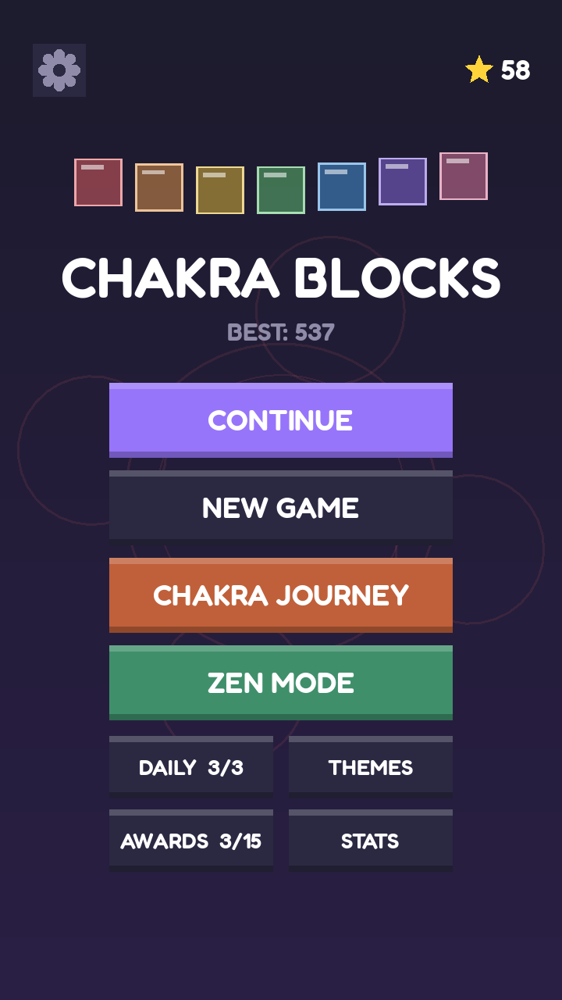
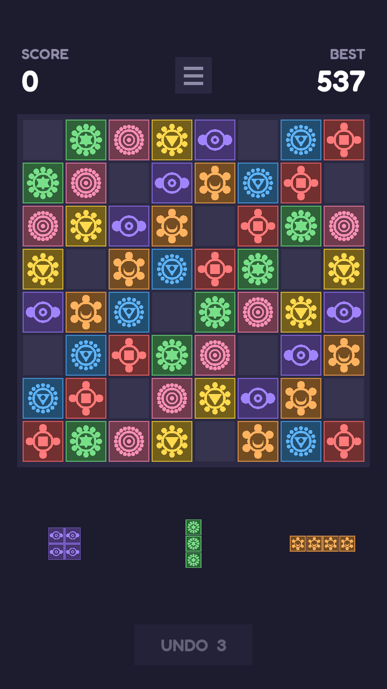
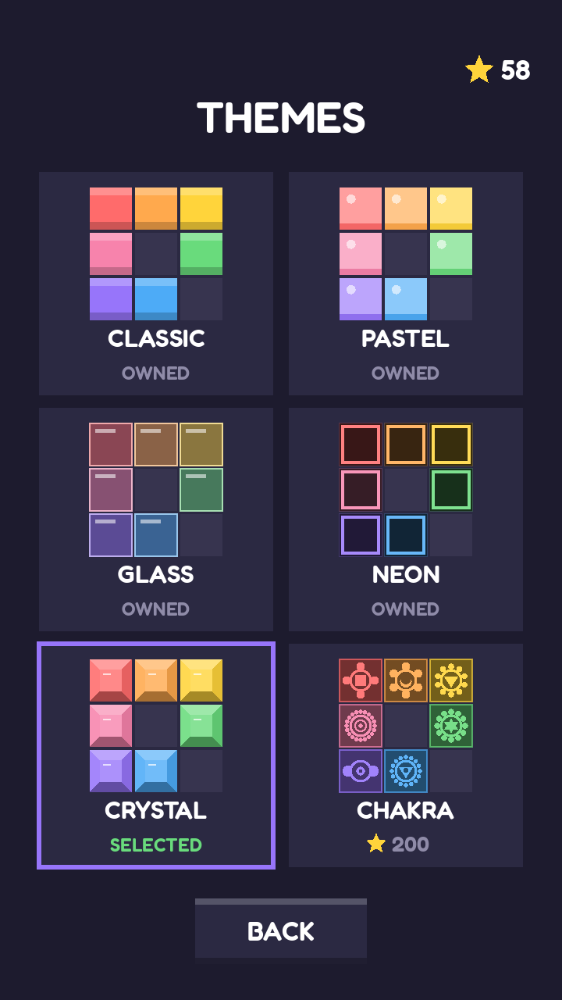

Puzzle · Android
Chakra Blocks
Drag blocks, fill rows and columns, and let seven chakra colors sing as they clear. A calm puzzle for short breaks and long evenings.



Features
- Seven chakra tonesEvery color has its own soft tone when it clears.
- Zen modeNo score, no game over, a background that breathes with you.
- Chakra Journey35 levels across seven worlds with goals and stars.
- Chakra Harmony and StonesClear all seven colors at once, or pop every block of one color.
- Daily quests and streaksFresh goals every day and rewards for coming back.
- Six themesClassic, Pastel, Glass, Neon, Crystal and Chakra.